Capstone da farmacologia diurética. Integra os segmentos do M5
ao M8: a homeostasia do volume manipulada por fármaco, com dose-resposta computada. As Fig. 1–13 voltam no
Caso, na Trilha e na Avaliação. Atribuição em CREDITS.md (em curadoria).
Acetazolamida (TCP/anidrase carbônica), alça (NKCC2), tiazídico (NCC), poupador de K (ENaC/aldosterona) — cada classe num segmento, com sua dose em mg.
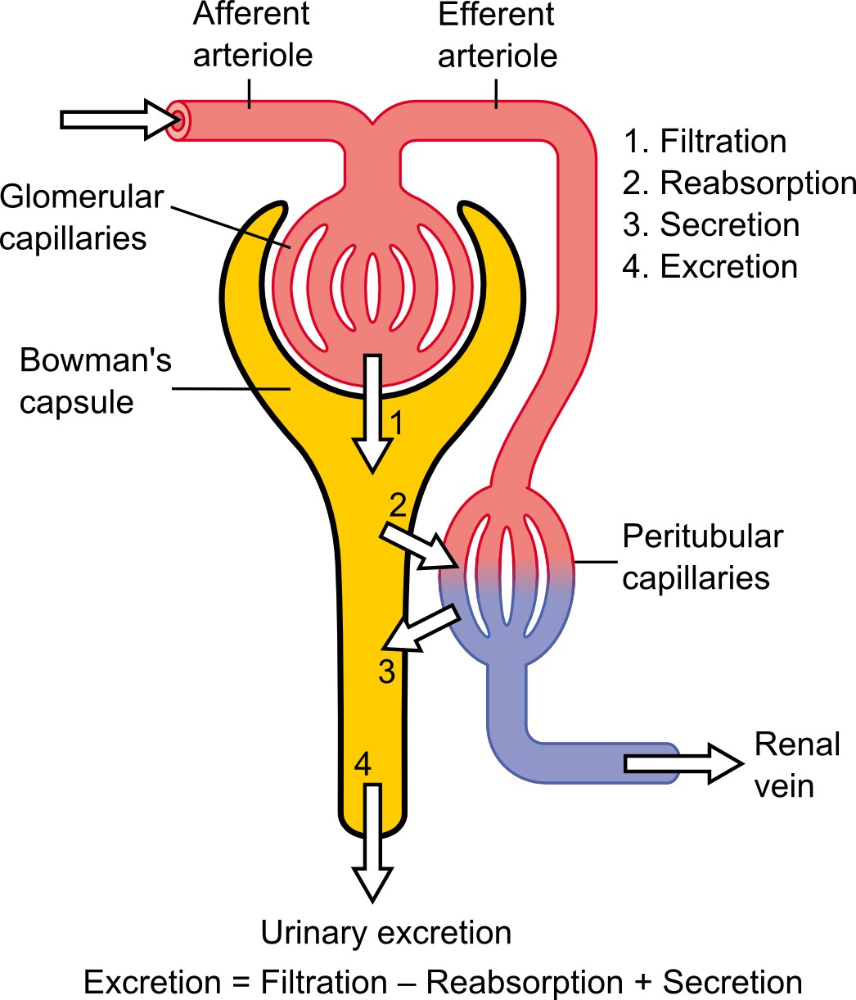
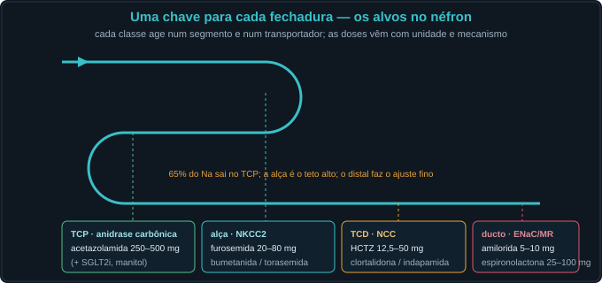
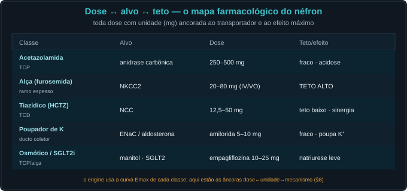
bloqueio = Emax·dose/(EC50+dose). Há limiar e há teto; dobrar a dose nem sempre faz mais xixi.
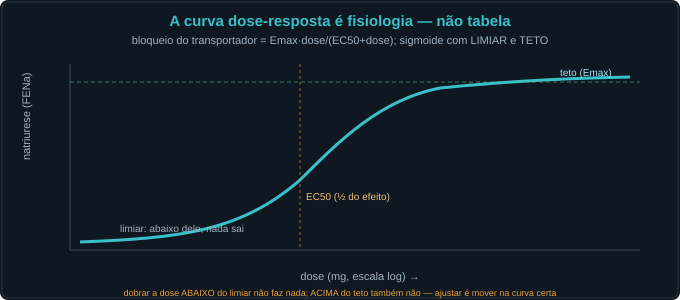
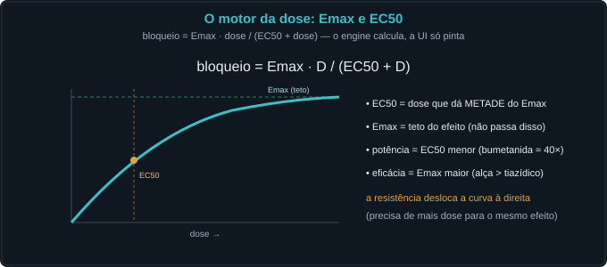
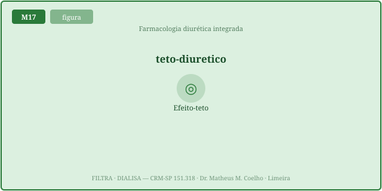
Bloquear um segmento aumenta a entrega ao próximo, que compensa. Bloquear DOIS em série impede a compensação → sinergia.
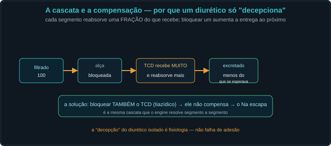
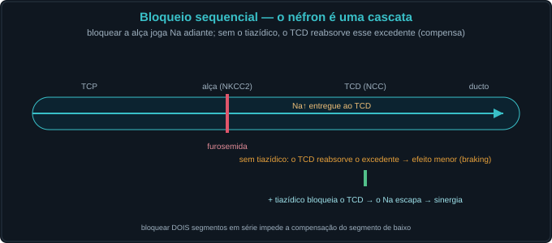
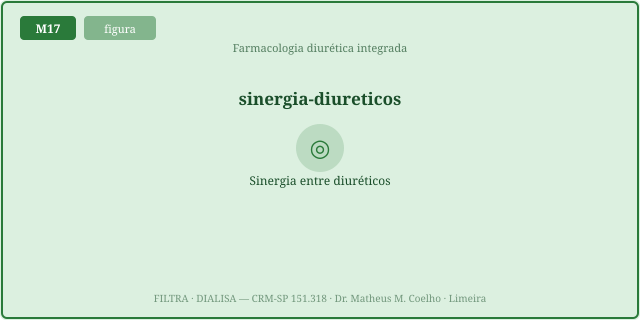
O uso crônico cria tolerância; a resistência é falha de entrega. Há uma escada para vencer.
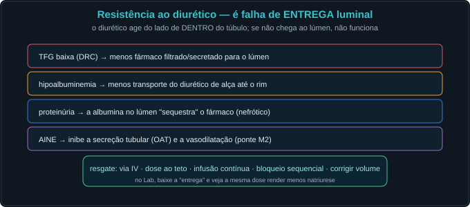
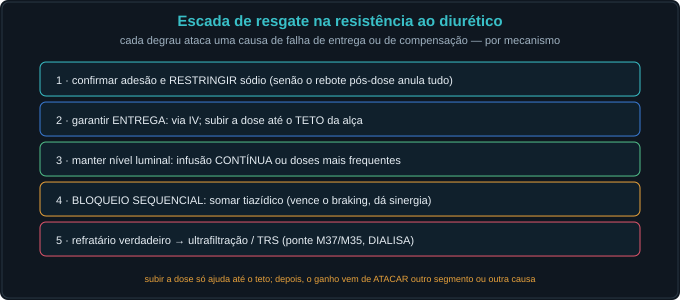
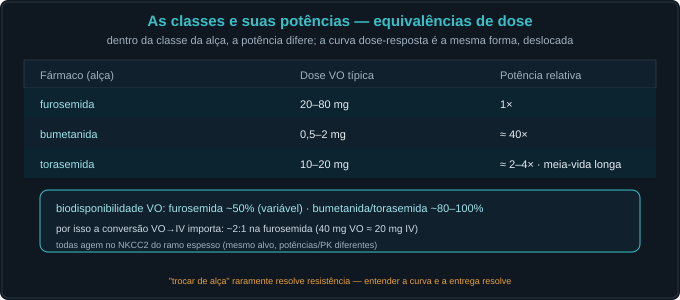
ICC descompensada, congesta. Já recebe furosemida 40 mg VO/dia há meses e "não faz mais efeito". Edema importante, albumina baixa.
A curva dose-resposta (Emax): bloqueio = Emax·dose/(EC50+dose). Tem limiar e teto.
A dose que produz metade do efeito máximo — mede potência (bumetanida tem EC50 menor: ≈40× a furosemida).
O teto do efeito — mede eficácia. A alça tem Emax alto (NKCC2, ~25% do Na); o tiazídico, baixo (NCC, ~5%).
Abaixo do limiar não há efeito; acima do teto, mais dose não acrescenta. É preciso mover na curva certa.
A cascata: o segmento de baixo compensa a carga extra de Na entregue. Fisiologia, não má adesão.
Tolerância no uso crônico: hipertrofia do néfron distal + RAAS → a mesma dose rende menos (curva desce/desloca).
Restrição de sal, dose mais frequente/contínua e bloqueio sequencial (somar tiazídico).
Bloquear dois segmentos em série (alça + tiazídico) → o de baixo não compensa → sinergia supra-aditiva.
O efeito do tiazídico é maior quando a alça já entregou muito Na ao TCD — o Δ depende do que chega.
Sobretudo falha de ENTREGA luminal: o fármaco age do lado de dentro do túbulo.
TFG baixa, hipoalbuminemia, proteinúria (sequestra o fármaco) e AINE (inibe a secreção tubular).
Restringir Na → IV/teto → infusão contínua → bloqueio sequencial → ultrafiltração/TRS.
Raramente — mesmo alvo (NKCC2). Muda PK, não vence braking nem entrega.
Os controles do Lab definem o regime. A curva mostra a natriurese × dose de alça (mg); ligue o tiazídico e veja a curva subir (sinergia); aumente o braking e ela cai; reduza a entrega e ela desloca à direita.
| Componente (dose · alvo) | Bloqueio |
|---|---|
| Acetazolamida (mg · anidrase carbônica) | — |
| Furosemida (mg · NKCC2) | — |
| Tiazídico (mg · NCC) | — |
| Amilorida (mg · ENaC) | — |
| Natriurese (FENa) | — |
| Acréscimo sobre o basal (ΔFENa) | — |